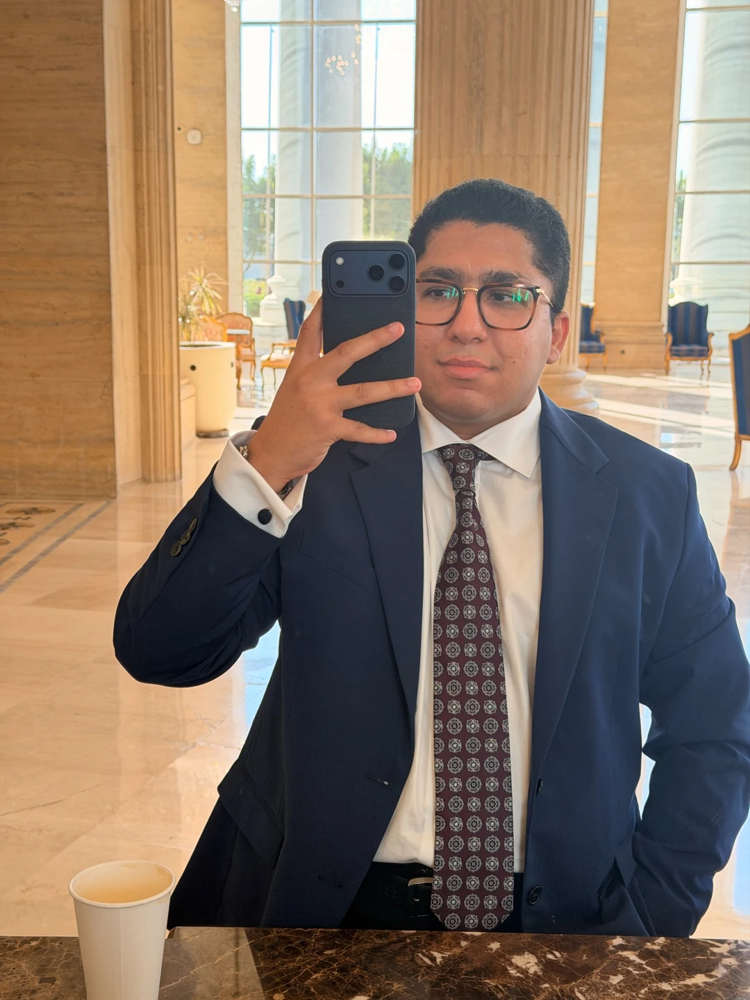

Start with people.
Understand the context, motivations, and barriers behind a choice.
MARKETING & CREATIVE PORTFOLIO
Cairo-based marketing graduate working across consumer research, brand strategy, and creative storytelling.

PORTFOLIO
Brand strategy, service design, independent research, and creative collaboration in film.
CREATIVE COLLABORATION
Working with filmmaker
Amira Abdelfadil.
As a Creative & Marketing Associate at ByAmirah, I contribute to personal branding, film marketing, research, and behind-the-scenes content. It’s where my interest in culture meets the work of telling human stories.
ABOUT
I’m Abdelrahman Mohamed, a marketing graduate based in Cairo. I’m interested in how people decide what to buy and how brands can earn a place in their everyday lives.
My work brings together consumer research, brand positioning, service design, and creative thinking. I’m especially interested in how repositioning changes what people see in a brand.
TEACHING
I teach IGCSE Business using practical examples and case studies to help students apply concepts such as entrepreneurship, business growth, and stakeholder objectives. I also wrote Your Guide to IGCSE Business as a study resource.
Arab Academy for Science, Technology & Maritime Transport
University of Hull international dual-degree programme
English — fluent (C1+)
HOW I THINK
Understand the context, motivations, and barriers behind a choice.
Use research to define the problem before deciding what to create.
Connect the strategic direction to an experience people can recognise.
CONTACT
For marketing opportunities,
creative projects, and thoughtful conversations.